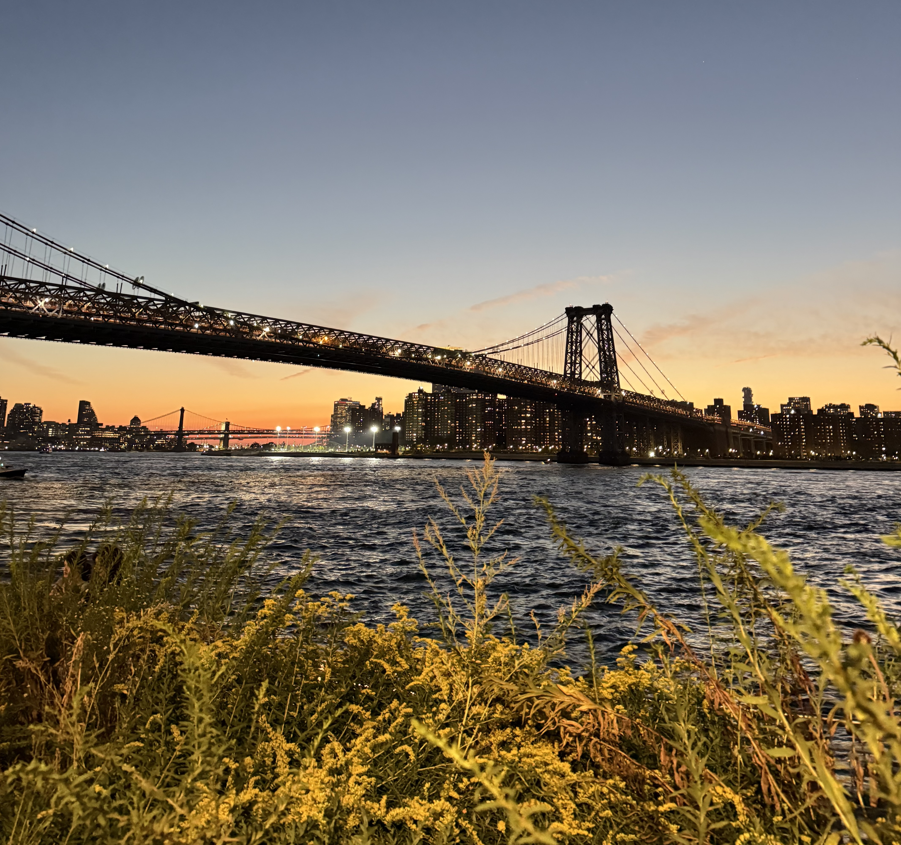

investment intern @ blockchain capital
fall 2025

i dropped out of berkeley fall semester of senior year to spend my time working closely with the investment team at blockchain capital in new york on deal sourcing, market research and investment diligence.
1. quantitative analytics: developing and maintaining an automated dashboard to aggregate sector-specific crypto metrics (e.g. quarterly growth rates, p/s ratios) using crypto apis (e.g. dune, defillama, tokenterminal, coingecko) to track our liquid investments.
2. investment thesis development: i led a two-hour research discussion to help the investment team formulate a thesis on investing into tokenized equities. during this process, i sourced and led over 20+ pitch calls (mainly through cold outreach and networking), synthesizing multiple forms of external market research to help drive my thesis.
3. founder relations & investment discussions: beyond my formal responsibilities, i proactively built relationships across the venture ecosystem around new york and online (and kept track with a crm). i regularly met with founders and investors to exchange ideas, understand market trends, and discuss potential investment opportunities. i would also frequently contribute to deal flow discussions in investment committee.
what i valued most about this experience was the level of ownership and intellectual curiosity it allowed me to exercise. the role was highly autonomous, so i had the freedom to pinpoint missing areas of coverage and independently drive an investment thesis from exploration to investment discussion. structuring my own days and setting my own priorities taught me that i do my best work when i'm trusted to manage my own time.